How to use Cloud Media Shrinker
Short answers for iPhone, iPad and Mac. Start with the free scan, review your biggest files, and nothing changes until you choose.
This page describes version 1.2.2 from the App Store and 1.2.3 of the free download for Mac. See what's new and what's coming.
Jump to a section
01Getting started
Install
Get Cloud Media Shrinker from the App Store on iPhone or iPad (iOS 27 or later) and from the Mac App Store on a Mac (macOS 13 or later). The download is free. One purchase unlocks both, see Unlocking. On a Mac you can also use the free download from the Cloud Media Shrinker page, which unlocks with its own license key.
iPhoneGive it access to Photos
- Open the app and go through the three intro pages.
- Tap Allow Access to Photos, then choose Allow Full Access when iOS asks.
If you only share some photos, the app asks for full access and offers Open Settings. It needs the whole library to find what takes the most space. Your library stays on your iPhone.
MacGive it access to Photos
- The first launch runs a short tour with sample files. You can skip it.
- Choose Apple Photos in the sidebar and allow access when macOS asks.
- On macOS 13 to 26 it also asks you to Select Photos Library once. That lets it read file sizes without downloading every original from iCloud. It only reads the library, and it doesn't switch libraries. In the window that opens:
- Go to your Pictures folder. If the window opened in your home folder, double-click Pictures. Otherwise click Pictures in the window's sidebar if it's listed, or type ~/Pictures and press Return.
- Click Photos Library once to select it. It may show as Photos Library.photoslibrary. Don't double-click it, because that opens it like a folder.
- Click Read Sizes.
Skip Photos under Media in the window's sidebar. It shows single photos, not the library, so Read Sizes stays grayed out. If Photos Library isn't in Pictures, open Photos, choose Photos > Settings > General and click Show in Finder next to the library's location. Then drag Photos Library from that Finder window onto the window that's asking. Since 1.2.2, on macOS 26 and older, the window opens in your Pictures folder and says what to select.
- When your first queue starts, macOS asks whether the app can control Photos. Allow it. That's how titles, captions and keywords get copied. Without it the app keeps your originals.
If you gave it access to only some photos, open System Settings > Privacy & Security > Photos, give it full access, then quit and reopen the app.
The first scan
The scan only measures. It doesn't change, move or upload anything. On iPhone you get an Estimated savings ring with videos, regular photos and Live Photos broken out. On the Mac you get a Free scan card that says how much you could free, with See the full report for the before and after.
The number depends on the preset you pick, and it's an estimate: every file compresses differently. Live Photo savings are optional. They count on keeping only the still photo.
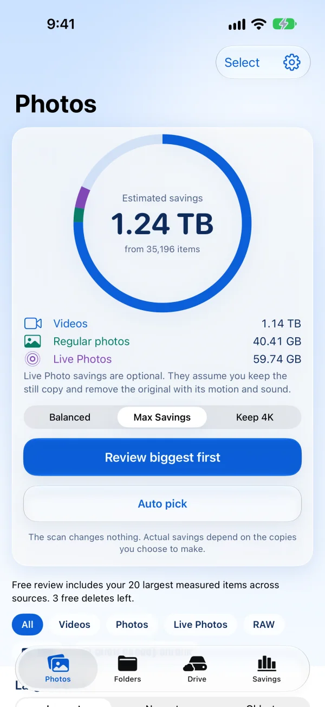

02Frequent questions
Short answers to what people ask most, with the most-asked first in each group. Tap a question to see its answer. The 🔗 beside it copies a link to that answer.
Buying, codes and unlocking
Is it a subscription? Do I still pay if I have a code?
There's no subscription. You pay once and that's it. Most offer codes are a discount, not a free unlock: the App Store shows the lower price before you confirm, and you pay it once.
Individual or Family: which one do I need?
Individual unlocks your own iPhone, iPad and Mac on one Apple Account. Family Access shares the unlock with up to five people in your Apple Family Sharing group, each on their own Apple Account. Already have Individual, including from a code? Choose Upgrade to Family in the app: under the gear on iPhone, in the sidebar on the Mac. It costs less than buying Family on its own.
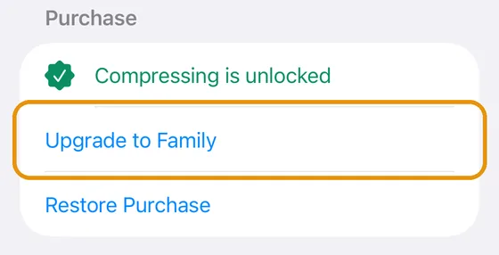
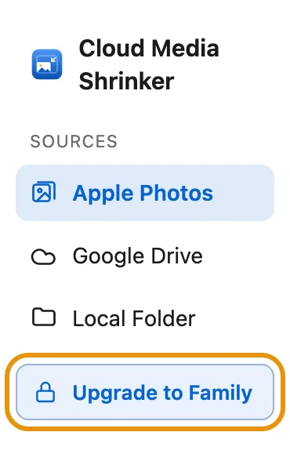
My family doesn't have it
Family Access is shared through Apple's Family Sharing. The person who bought it needs Purchase Sharing turned on, and so does each family member (Settings > Family > Purchase Sharing). Then each family member opens the app and taps Restore Purchase. A new purchase can take a while to reach family members. If it isn't there yet, try again later, and restart the device if it still isn't.
An Individual purchase isn't shared. Family won't show up under subscription sharing, since it's a one-time purchase: how to share it.
I paid or redeemed a code, but it still looks locked
Restore the purchase. On iPhone, tap the gear on the Photos tab, then Restore Purchase under Purchase. On the Mac, click Restore purchase on the free scan card or in the unlock window. Make sure the App Store is signed in with the same Apple Account you bought with.
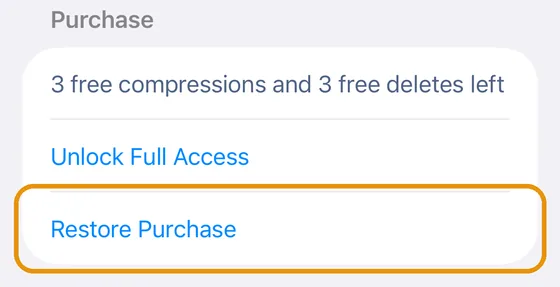
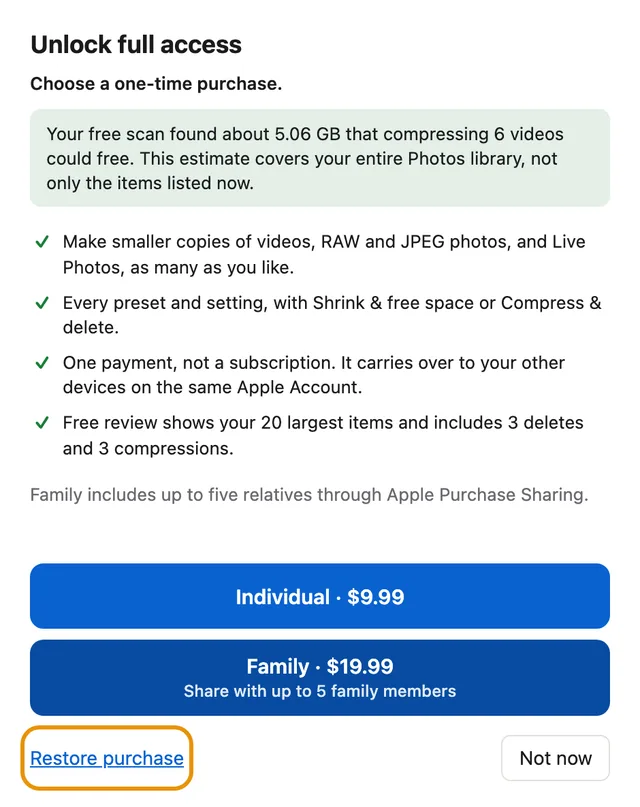
Still locked? Restart your iPhone, iPad or Mac, open the app and restore again. Sometimes the App Store on a device doesn't hand a new purchase to apps until it has restarted, and a restart has fixed that for people who had paid.
On a Mac, an App Store purchase or code unlocks the Mac App Store version. The free download from this website unlocks a different way. In 1.2.2 the Mac's sidebar button can also keep its padlock after you unlock. If the unlock window says full access is unlocked, it is.
If it's still locked after all that, email support@danielyakobian.com.
Where do I enter a code?
Tap the code's link if you have one. It opens the App Store with the code filled in. Or open the App Store and use Redeem Gift Card or Code: on iPhone it's under your account picture, and on a Mac under your name at the bottom of the sidebar. There's no code field inside the app. If the app still looks locked afterwards, restore the purchase.
My code doesn't work on the website download
App Store codes only work in the App Store, not at the website checkout. One App Store purchase covers your iPhone and Mac on the same Apple Account. The free download for Mac on this website unlocks with a license key from Polar, which is a separate purchase. If you already have the App Store version, it unlocks free with the Order ID from Apple's receipt instead (how). If you ended up paying for both, email support@danielyakobian.com.
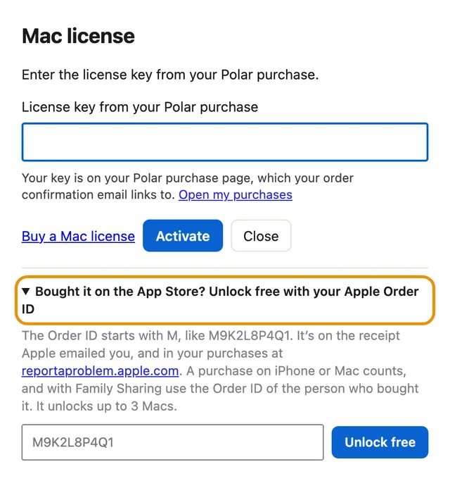
Does one purchase cover my iPhone and my Mac?
Yes. One App Store purchase unlocks the iPhone, iPad and Mac App Store apps on the same Apple Account. Buy or redeem on one, then use Restore Purchase on the others. The free download for Mac from this website is separate: it takes a license key, or unlocks free with the Order ID from your App Store receipt (how).
Copies and quality
Does a copy keep its date, location and albums?
Yes. A copy keeps the capture date, location, Favorite, Hidden, albums, caption and keywords, and since 1.2.2 the lens details too. Before an original goes, the app compares the two and keeps the original if something doesn't match.
One thing changes: Photos counts the copy as newly added, so it shows up at the top of Recents. Sort by capture date to see it in its old spot.
Does compressing lower the quality?
A little. A smaller copy is a new encoding of the video, so it isn't identical to the original, but with Balanced or Keep 4K it looks very close. Keep 4K keeps the resolution and frame rate and still comes out about 45% smaller, because cameras record more data than you need for watching. Max Savings goes down to 720p, so use it for videos you want to keep but don't need at full size. HDR stays HDR.
Photos are only changed if you pick them: JPEG and RAW photos become HEIC copies. Not sure about a video? Check the copy first.
Can I check a copy before its original is deleted?
Yes. Before you start a queue, turn off Delete originals when done (iPhone) or untick Delete each original once its smaller copy is in Photos (Mac). The copies are saved next to the originals. Look them over in Photos, then delete the originals from Savings. If you don't like a copy, Undo deletes it and keeps the original.
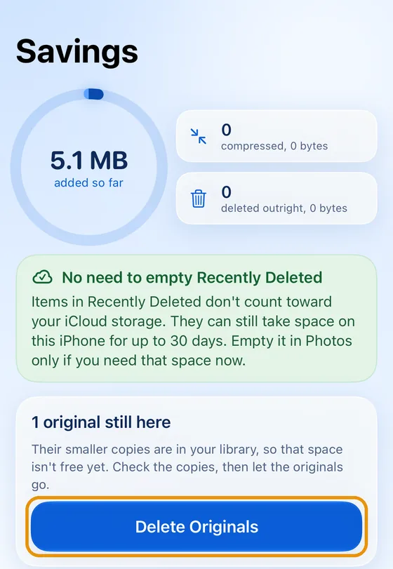
A deleted original also stays in Recently Deleted for 30 days, unless you're over your iCloud storage limit.
Why were some originals kept?
Right before deleting, the app compares each copy with its original: date, location, albums, caption, keywords and more. If anything doesn't match, or Photos can't confirm it, the original stays and the queue says why. Up to 1.2.1 this also happened to photos whose caption or keywords had been removed in Photos. That's fixed in 1.2.2.
Kept originals are listed in Savings, where you can delete them yourself once you've looked. On iPhone, a card there says how many originals are still here.
A compressed video sounds hollow, like a tin can
This hit videos with more than one audio track, like spatial audio from newer iPhones. Fixed in 1.2.2: a copy now plays the same audio as its original. Update the app, then compress those videos again from their originals. If you already deleted one, it's usually still in Recently Deleted in Photos for 30 days, unless you were over your iCloud storage limit.
What happens to a Live Photo?
Its smaller copy is the still photo only, without the short video and its sound. That's optional: a Live Photo only changes if you make a still copy of it, and the scan counts Live Photo savings separately. Skip the ones where the moving part matters to you.
I can't edit the slow part of a slo-mo after compressing
The copy plays the same, but Photos no longer treats it as slo-mo, so you can't move the slow part or set it back to normal speed. Skip slo-mo videos if you might edit them later. Since 1.2.2 the app warns you before you compress one, tags Slo-mo videos in the list, and has a Slo-mo filter.
The same video shows up twice
If one has (compressed) in its name, it's the smaller copy, and the original goes once the queue finishes or when you delete it. Otherwise it's usually two real copies in your library. Photos can merge them: look for Duplicates under Utilities.
Why can't I compress this photo?
The app makes smaller copies of videos, RAW photos, JPEG photos and Live Photos. HEIC photos, the kind an iPhone takes by default, are already compact, so they're left as they are. PNG and TIFF files and screenshots aren't compressed either. You can still keep or delete any of them from the list.
A RAW photo with edits in Photos is skipped too, because a copy made from the RAW file would lose the edits.
Why does the list show videos that are already small?
The list is everything in your library, largest first, so small videos are in it too. Show already shrunk on iPhone and Hide already shrunk on the Mac only cover copies the app made and files named like one, with (compressed) at the end of the name. A video that was small to begin with isn't one of those.
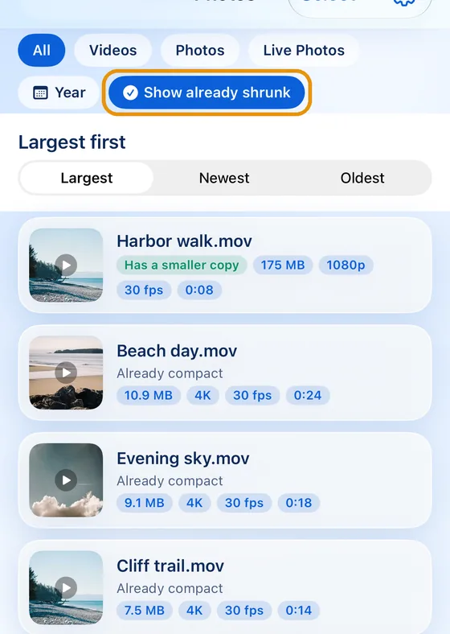
If a copy wouldn't come out clearly smaller with your preset, the app says the video is already compact, or already small enough, and doesn't re-encode it. A lower preset, like Max Savings, may still shrink it.
A video shows a bigger size here than in Photos
That can happen with a video you edited in Photos, for example a trimmed one. iCloud keeps the original and the edited version, and the app counts both, because both take up space. The smaller copy is made from the edited version, so once the original is gone the edit can't be reverted.
What it works with
Does it work with Google Photos, WhatsApp or Windows?
No. It works with Apple Photos, including iCloud Photos, on iPhone, iPad and Mac. It also works with folders: any folder in Files on iPhone, and on a Mac any folder in Finder, including an external drive or Google Drive for desktop. It doesn't work with Google Photos, Immich or WhatsApp, and there's no Windows or Android version. Messages attachments aren't covered yet. That one is on the What's coming page, for Mac.
Does it upload my photos anywhere?
No. Compressing happens on your iPhone, iPad or Mac. There's no account, no ads and no analytics in the app, and I never see your library. What can leave your device: Apple Photos downloading from iCloud, your purchase going through Apple (or the license check in the free download for Mac), and a bug report, only if you send one. The privacy page shows it in one picture.
Can I back up the originals before they're deleted?
On a Mac, yes, for items you pick with Delete: Copy to a folder, then delete… in the bar at the bottom copies the originals to a folder you choose, such as an external drive or a network drive, and then deletes them. For compressions, turn off deleting originals, export them from Photos yourself, and delete them later from Savings. The iPhone app doesn't have a backup option.
Which iPhones and Macs does it work on?
The iPhone and iPad app needs iOS 27 or iPadOS 27 or later. That's the first version that lets an app read the real size of each photo and video without downloading it, which is how the app finds your biggest files. The Mac app needs macOS 13 or later. If your iPhone is on an older iOS, the Mac app works on the same iCloud Photos library, and one purchase covers both.
On older Intel Macs, some 4K HDR videos can't be compressed. The app says this Mac can't encode that size and format, and leaves the original alone.
Storage space
Do I need to empty Recently Deleted to get my iCloud space back?
No. Apple says items in Recently Deleted don't count toward your iCloud storage. They can still take space on your iPhone or Mac for up to 30 days, so empty Recently Deleted in Photos only if that device itself is short on space. If you're over your iCloud storage limit, Photos skips Recently Deleted, and deleted items can't be recovered.
My iCloud space went down but my iPhone storage went up. Why?
To compress a video that's only in iCloud, your iPhone first downloads the full original. Once the smaller copy is in Photos, the original moves to Recently Deleted, still full size on the phone, for up to 30 days. It no longer counts toward iCloud, so iCloud goes down while the phone goes up. That space comes back on its own as items leave Recently Deleted. If you need it now, empty Recently Deleted in Photos, which removes the 30-day undo.
The storage numbers in Settings can also take a while to catch up after a big queue.
Queues and setup
MacThe queue got stuck or is very slow
Update to 1.2.2. It fixes long queues that slowed to a crawl or started failing after 20 or 30 videos. A video that stops making progress for 10 minutes now starts over once by itself. If it gets stuck again, it's marked so you can Try again later, and the rest carries on. Keep the Mac plugged in and leave free space on the disk. You can still click Cancel on a video in the queue to skip it.
Still crawling on 1.2.2? Quit the app, restart the Mac and start the queue again. That got one long queue moving again.
iPhoneCompressing stops when I leave the app
iOS can pause the work in the background. Nothing is lost: the video goes back in the queue and carries on when you open the app again, or later by itself while your iPhone isn't in use. If iOS closed the app, open the queue and tap Carry On. A Mac doesn't have this limit, so it's the better place for a very long queue.
MacRead Sizes is grayed out
The window is probably showing single photos, not the library. That happens if you click Photos under Media in its sidebar. Go to your Pictures folder instead, click Photos Library once, then click Read Sizes. The setup steps say where to look if it isn't there.
If the app then says it couldn't read size records, a folder was chosen instead of Photos Library itself. If it says the library doesn't match, choose the library Photos opens with. Click Select Photos Library to try again.
It scans my whole library again every time I open it
The first scan of a library is only saved once it has finished. If you leave the app before then, iOS can close it, and the next open starts from zero. A very large library can take a long time, so on iPhone keep the app open on the Photos tab, with the screen on, until Measuring your photos and videos is done. If your iPhone locks by itself first, set Settings > Display & Brightness > Auto-Lock to Never until it finishes, then set it back. On a Mac, don't quit the app until Measuring your library finishes.
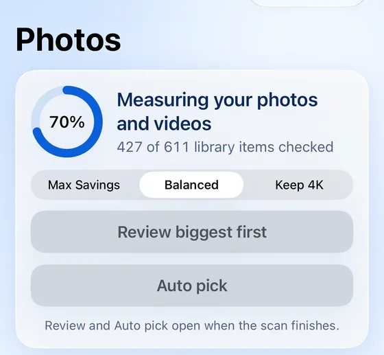
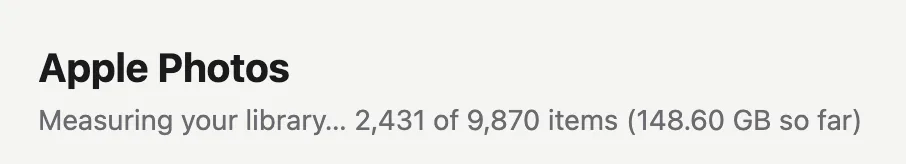
After one full scan the app keeps the result, and later opens only measure what's new or changed. On iPhone, Review biggest first and Auto pick wait while that check runs.
03Reviewing your biggest files
The presets
Every compression uses one of three presets. On iPhone you can change it for any single video.
- Max Savings: 720p at most, 30 fps at most, HEVC, medium quality. About 85% smaller.
- Balanced (recommended, and where a new install starts): 1080p at most, 30 fps at most, HEVC, high quality. About 70% smaller.
- Keep 4K: keeps the resolution and frame rate, HEVC, high quality. About 45% smaller.
If you used the app before 1.2.2, it keeps the preset you had.
HDR stays HDR. Custom lets you pick resolution, frame rate, format and quality yourself. JPEG and RAW photos become HEIC copies, and a Live Photo can become a still-only copy.
iPhoneSwipe through cards
- Tap Review biggest first and pick a default preset for the deck.
- Swipe right to keep. Swipe left to mark it for deletion. Tap Compress to make a smaller copy. Undo takes back the last card.
- Tap Done. You'll see everything you picked on one screen before anything happens.
Keep happens right away and hides the item from the list. Deletes and compressions wait until you confirm. If you close the deck early, nothing has been compressed or deleted yet.
iPhoneOr use the list
The Photos tab lists everything largest first. Swipe a row right to keep it, or left for Delete, Compress and Still copy. Tap Select to pick many at once, for example the largest 25.
Sort by Largest, Newest or Oldest. Filter by Videos, Photos, Live Photos, RAW or year. Show already shrunk brings back items you've already compressed. It doesn't hide videos that were small to begin with.


MacPick from the grid
Each card has Shrink & free space, Keep and Delete. Picks collect in a bar at the bottom. When you're ready, click Shrink & free space in that bar, check the settings and click Start.
Switch to Advanced to get separate Compress (keeps the original) and Compress & delete buttons. In the viewer, K keeps, C compresses, B compresses and deletes, and X deletes.
Auto pick
Auto pick selects everything above a size you choose, largest first. Nothing happens until you look them over. It leaves 10 GB free for downloads from iCloud.
04What happens to originals
- The copy comes first. If an original is only in iCloud, it's downloaded at full quality. The smaller copy is saved to Photos next to it, with the same capture date, location, Favorite and albums.
- The copy is checked. It has to be at least 10% smaller and the same length. Right before deleting, the app checks again that nothing changed. If something doesn't match, it keeps the original and tells you why.
- Originals go at the end. With Delete originals when done on (iPhone) or Delete each original once its smaller copy is in Photos ticked (Mac), the originals are deleted together once the whole queue finishes. Photos asks you to confirm first.
Turn that option off to keep your originals. You can delete them later from Savings, or undo a compression, which deletes the copy and keeps the original.
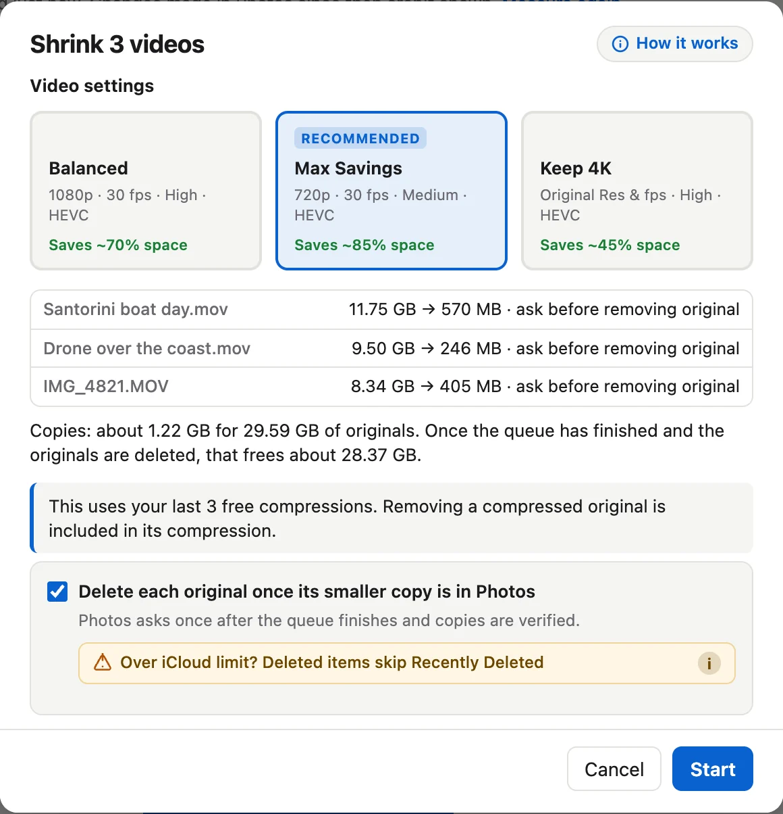
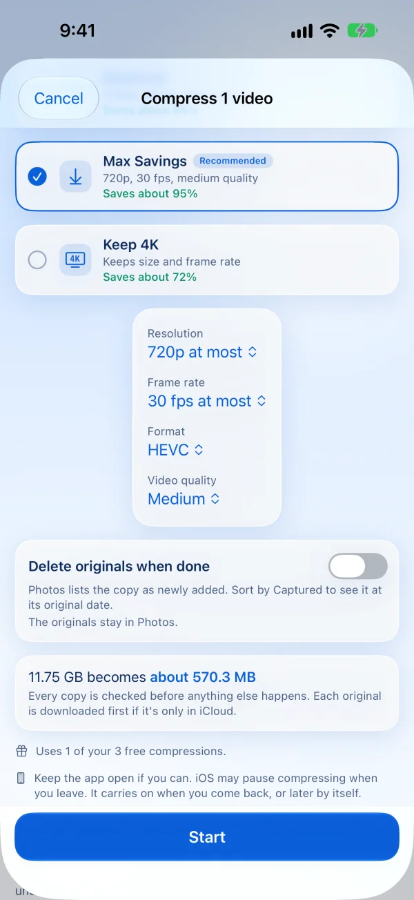
Recently Deleted and iCloud space
Deleted photos and videos go to Recently Deleted in Photos for 30 days, so you can still get them back. Items in Recently Deleted no longer count toward your iCloud storage. They still take space on your iPhone or Mac until they're removed, so empty Recently Deleted if you need that space now.
Over your iCloud storage limit? Then deletes skip Recently Deleted. Photos and videos you delete are removed right away and can't be recovered there. Apple's iCloud Photos storage guide has the details. Check your copies first.
Copies show up as newly added. In Photos, sort by capture date to see them in their original spot.
05Long queues
A big 4K video can take a long time to compress, and a queue of hundreds can run for hours.
MacKeep it moving
- Keep it plugged in, with the lid open. The app keeps the Mac from going to sleep while it works. If a video gets stuck, it also keeps the screen on for the rest of that queue.
- Leave room on the disk. Each original that's only in iCloud needs its size plus 2 GB free to download, or that job fails. The copies also add up until the queue finishes, because the originals go at the end.
- Don't quit. Quitting stops the queue and throws away the progress on the current file. The app asks first. The Mac doesn't save a queue, so after a quit or a crash you start it again. Copies that were finished are already in Photos, and you can delete their originals from Savings.
iPhoneWhen you leave the app
Keep the app open if you can. iOS shows a progress card while it works in the background, but it can pause the work at any time. When that happens, the current file goes back in the queue and nothing is lost. It carries on when you come back, or later by itself while your iPhone isn't in use.
If iOS closed the app, the queue shows what didn't finish, with Carry On to pick it back up. The screen won't lock on its own while jobs are queued.
When a video fails
The queue says why and carries on with the rest. Try again runs that video once more. A failed video stays in your list, so it can be picked again next time. Choose Keep on it to leave it out.
06Unlocking and offer codes
Everything here is a one-time purchase. There's no subscription.
What's free
The scan is free. So is reviewing your 20 largest items, plus 3 compressions and 3 deletes on each device. A compression only counts when a copy is finished, and deleting the original after it is included. Keep doesn't count against anything.
One purchase, iPhone and Mac
- Individual unlocks everything on your devices that use the same Apple Account. Buy it once on iPhone or in the Mac App Store.
- Family Access shares the unlock with up to five family members through Family Sharing.
- Family Upgrade is for people who already own Individual, including from an offer code, and for early Mac users. It costs less than buying Family on its own.
The free download for Mac on this website is free to try, with the same free limits as the App Store. A license key from Polar, a separate purchase, unlocks everything on up to 3 Macs. Enter it with Mac license… at the top of the app. It doesn't unlock the iPhone or iPad app.
Already bought it on the App Store? The free download unlocks free: choose Mac license…, then Bought it on the App Store?, and enter the Order ID from Apple's receipt. It starts with M, and it's also in your purchases at reportaproblem.apple.com. With Family Sharing, use the Order ID of the person who bought it. It works on up to 3 Macs.
Redeem an offer code
- Tap the code's link if you have one. It opens the App Store with the code filled in.
- Or on iPhone: open the App Store, tap your account picture, then Redeem Gift Card or Code.
- On a Mac: open the App Store, click your name at the bottom of the sidebar, then Redeem Gift Card.
Prices show in your local currency.
Restore a purchase
On iPhone, tap the gear on the Photos tab and choose Restore Purchase under Purchase. On the Mac, click Restore purchase on the free scan card or in the unlock window. If it still looks locked, restart the device and restore again: more on that.
07Good to know
Slo-mo videos
A compressed slo-mo plays the same, slow part included. But Photos no longer treats it as slo-mo, so you can't move the slow part or set it back to normal speed. Since 1.2.2 the app warns you before you compress one, tags Slo-mo videos in the list, and has a Slo-mo filter.
Videos with spatial audio
Copies of videos with spatial audio or several audio tracks could sound hollow, like they were recorded in a can. Fixed in 1.2.2. Compress those videos again from their originals after you update.
GoPro and action camera videos
Some GoPro clips have come out playing in slow motion after compressing. I'm looking into why. Until that's sorted out, check the copies of GoPro videos before you delete their originals.
Duplicates
Photos has its own duplicate finder. Look for Duplicates under Utilities in Photos, on iPhone and on the Mac.
Folders and Google Drive
- Mac: choose Local Folder or Google Drive in the sidebar and add a folder. Google Drive needs Google Drive for desktop. Files that are only in the cloud download when you compress them.
- iPhone: the Folders tab works with any folder in Files. The Drive tab sends you a link to the Mac app, which handles Google Drive.
- Smaller copies go in a Compressed folder inside the folder you chose. Deleted originals go to the Trash, or Google Drive's trash.
MacUpdates for the free download
From 1.2.3, the free download for Mac keeps itself up to date. It checks once a day, and Check for Updates… in the Cloud Media Shrinker menu checks right away. To stop the daily check, turn off Check for Updates Automatically in the same menu. An update waits until nothing is being compressed or deleted, so it never stops a queue, and your license, settings and history stay as they are. On 1.2.2 or older, download the app once more from the Cloud Media Shrinker page and replace it in Applications. Updates come to you after that. The App Store versions update through the App Store.
Keeps and Savings stay on each device
What you've kept and what you've saved are tracked on each iPhone and Mac separately. They don't sync yet. Copies are different: each one has (compressed) at the end of its file name, so every device knows it's a copy, and so does a fresh install. You won't be offered the same video twice.
08Getting help
- Mac: Report a bug and Send feedback are at the bottom of the sidebar, under Help at the top right, and in the Help menu.
- iPhone: tap the gear on the Photos tab. Under Help you'll find Report a Bug, Send Feedback and Email Support.
If the app doesn't have full access to Photos yet, the gear isn't there. Email me instead.
A report goes privately to me. You can add up to 3 screenshots and an email if you want a reply. App diagnostics are included unless you turn them off, and you can read them first: the app and system versions, the chip type and the app's recent events. They never include file names, library paths or your library history. Anything you can see in a screenshot you attach does get sent.
Or email support@danielyakobian.com. Here's the privacy policy.
Curious what changed? See What's new. And for what's next, What's coming.